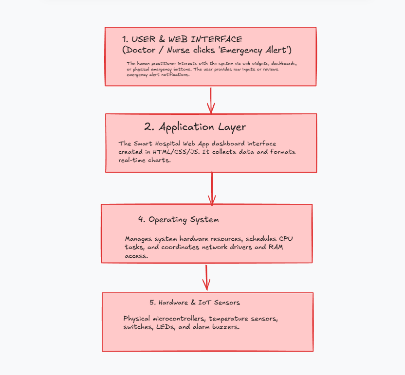
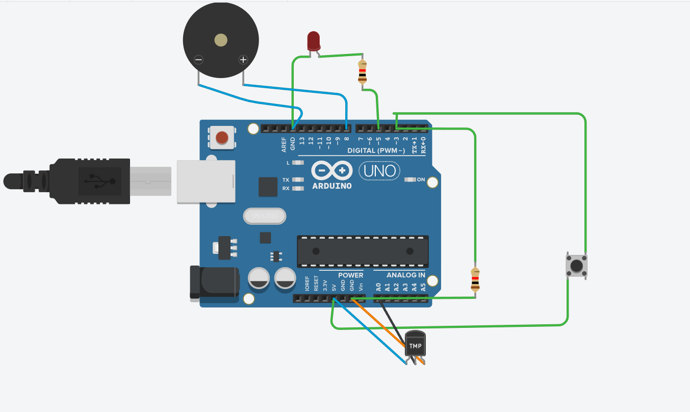
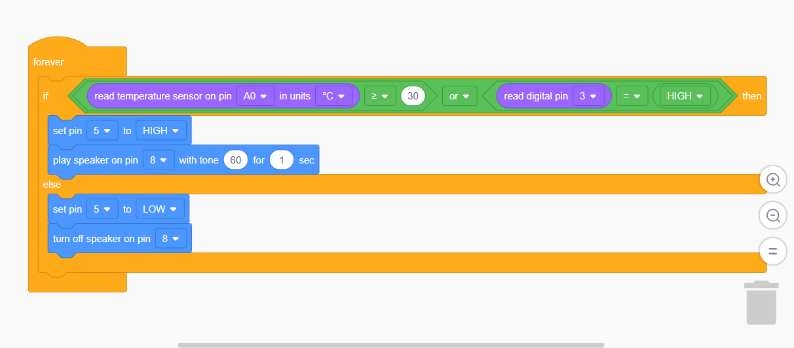
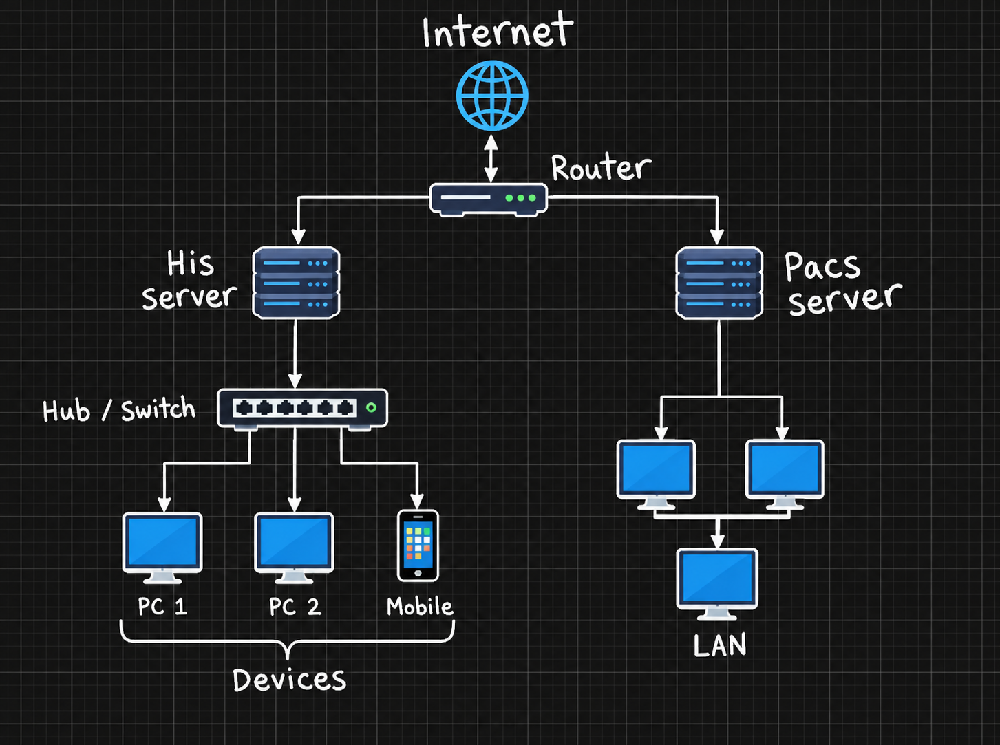
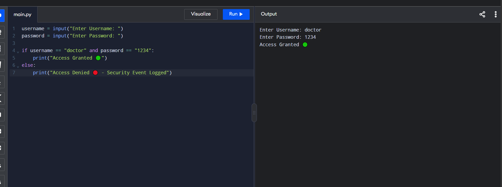
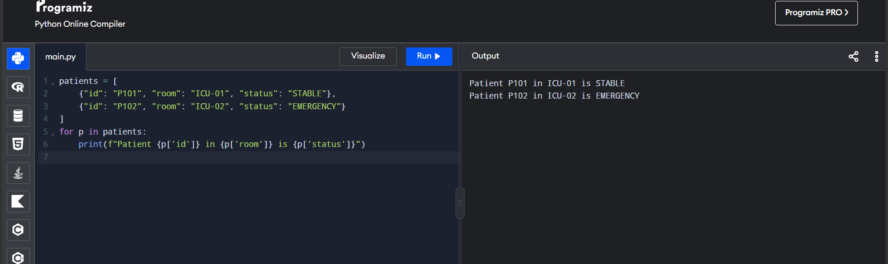

Smart Hospital
Command Center
A connected hospital computing project combining computing systems, hardware and logic, networks, cybersecurity, Python algorithms, and data structures.
Project Demonstration
Project videoProject demonstration video related to the Smart Hospital system.
Six connected standards
Project Goal
Design a hospital computing system that connects physical sensors, software, networking, security, algorithms, and structured patient data.
Tools Used
Canva · Tinkercad Circuits · Google Colab / Python · Google Sites
Computing system layers
The project shows how a hospital emergency request moves from the user interface through software and the operating system to physical hardware.
User & Web Interface
Doctors and nurses interact with the hospital dashboard and review patient information.
Application Layer
The hospital application collects, displays, and formats patient information.
Operating System
Manages hardware resources, CPU tasks, memory, device drivers, and network access.
Hardware & IoT Sensors
Physical microcontroller, temperature sensor, emergency switch, LED, and buzzer.
Project Diagram
Computing system layers
Hospital emergency hardware
This section documents the Tinkercad circuit used in the project and the logic connecting its inputs and outputs.
Inputs
- TMP36 temperature sensor → A0
- Emergency pushbutton → D3
Logic
Temperature ≥ 30°C OR Button = HIGH
If either condition is true, the emergency outputs are activated.
Outputs
- Red LED → D5
- Piezo buzzer → D8
Tinkercad Circuit
Arduino UNO
Tinkercad Block Code
OR condition
Hospital network architecture
The network connects hospital servers and devices through the router and switches so departments can exchange information.
Network Devices
Internet · Router · Hospital Server · PACS Server · Hub/Switch · PCs · Mobile/IoT devices
Performance Metrics
Bandwidth: 100 Mbps
Network Load: 65%
Latency: 12 ms
Purpose
Support communication between clinical systems, servers, computers, and connected hospital devices.
Hospital Network Topology
Network architecture
Security & software protection
The project demonstrates the main security concepts needed to protect hospital information.
Authentication
Users provide a username and password before accessing the hospital system.
Authorization
Permissions depend on the user's role and determine which information and actions are available.
Event Logging
Failed access attempts can be recorded as security events for later review.
Python Authentication Example
Project evidence
Patient emergency algorithm
The algorithm classifies a patient's condition from three vital measurements.
Decision Rules
Critical: temperature > 38.5°C OR heart rate > 120 OR oxygen < 90%
Warning: temperature > 37.5°C OR heart rate > 100 OR oxygen < 95%
Stable: none of the warning or critical conditions are met.
def evaluate_patient(temp, heart_rate, oxygen):
if temp > 38.5 or heart_rate > 120 or oxygen < 90:
return "CRITICAL EMERGENCY"
elif temp > 37.5 or heart_rate > 100 or oxygen < 95:
return "WARNING - MONITOR"
else:
return "STABLE"Patient data organization
A list of dictionaries stores patient information so the algorithm can process multiple patients.
hospital_database = [
{"id": "P101", "room": "ICU-01", "temp": 37.0, "hr": 75, "o2": 98},
{"id": "P102", "room": "ICU-02", "temp": 39.2, "hr": 125, "o2": 88},
{"id": "P103", "room": "ER-05", "temp": 36.8, "hr": 82, "o2": 96}
]Example Patient Records
List + dictionaries| ID | Room | Temperature | Heart Rate | O₂ | Example Status |
|---|---|---|---|---|---|
| P101 | ICU-01 | 37.0°C | 75 | 98% | STABLE |
| P102 | ICU-02 | 39.2°C | 125 | 88% | CRITICAL |
| P103 | ER-05 | 36.8°C | 82 | 96% | STABLE |
Python Output
Project evidence
Smart Hospital system overview
A single summary of how the six project parts connect.
Interface
Doctors and nurses access hospital information.
Hardware
Sensors and emergency outputs collect and communicate physical events.
Network
Servers and devices communicate through the hospital network.
Security
Authentication and authorization protect hospital information.
Algorithm
Python rules classify patient risk from vital measurements.
Data
Lists and dictionaries organize multiple patient records.